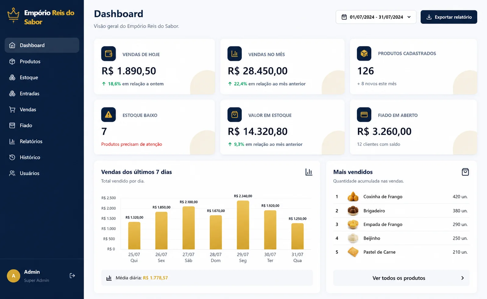
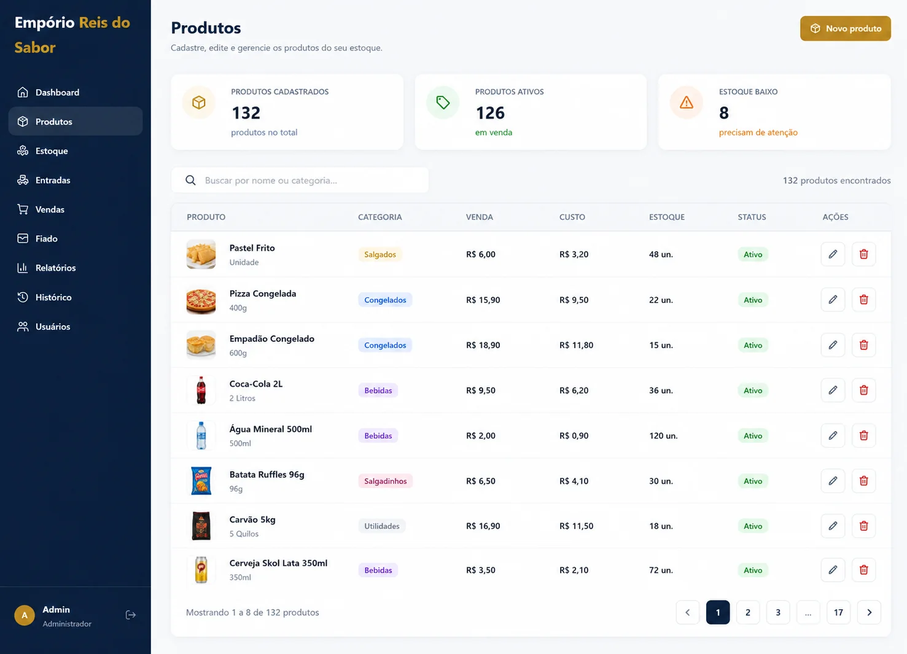
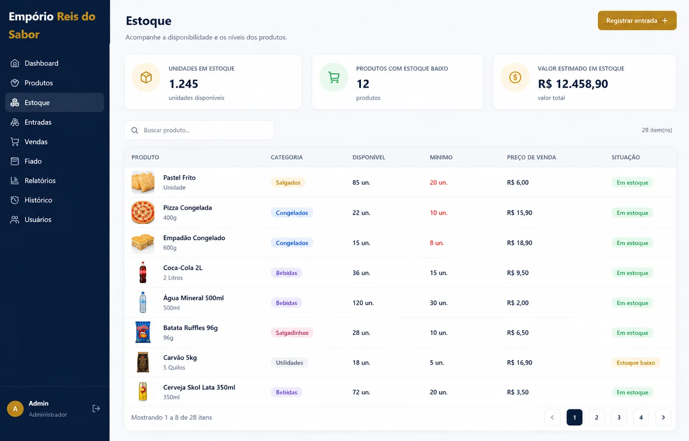
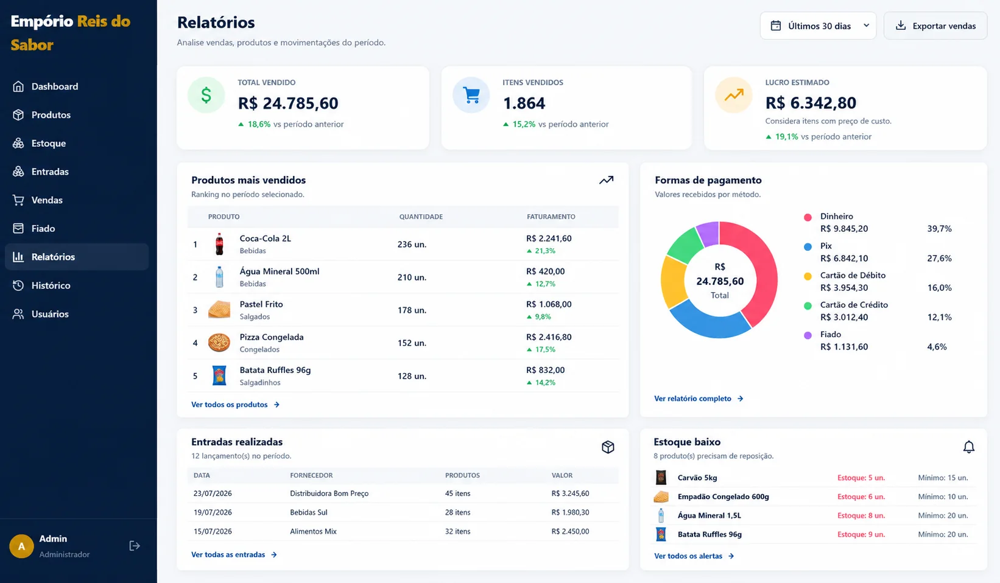
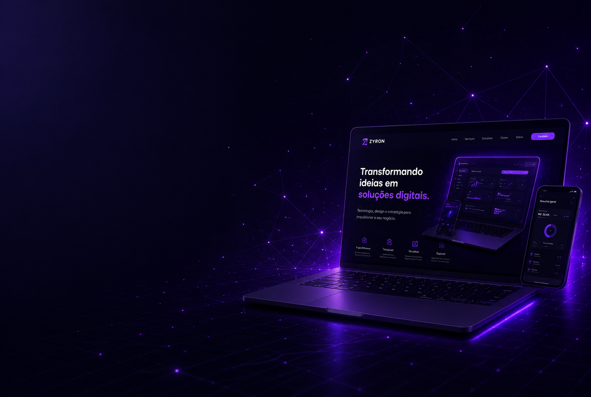

Compras planejadas
Organize insumos e necessidades da operação.
EMPÓRIO REIS DO SABOR
Aplicação criada para conectar produção, compras, estoque e vendas à rotina real de um comércio de alimentos.

Produção planejadaEstoque conectadoO mesmo conceito pode ser adaptado a diferentes negócios com produção própria.
FLUXO CONECTADO
A solução relaciona o que precisa ser comprado, o que será produzido, o que está disponível e o que foi vendido.
Organize insumos e necessidades da operação.
Registre etapas, quantidades e disponibilidade.
Relacione a saída de produtos ao estoque e aos resultados.
DEMONSTRAÇÃO VISUAL
Telas reais para acompanhar produtos, estoque e resultados do Empório.



Necessidades, fornecedores e entradas.
Planejamento e acompanhamento do fluxo.
Insumos e produtos disponíveis.
Registro das saídas e movimentações.
Visão mais clara sobre a operação.
Regras adaptadas ao funcionamento real.

SOLUÇÃO PERSONALIZADA
Conte como sua empresa trabalha e descubra como adaptar essa base ao seu negócio.
Conversar sobre meu projeto